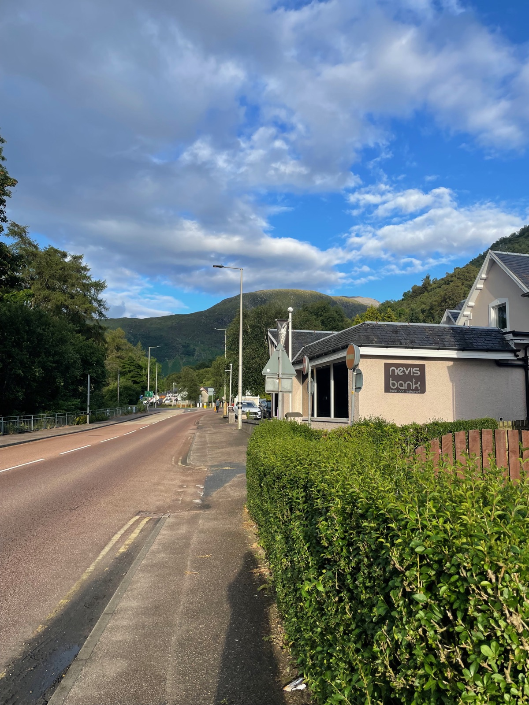
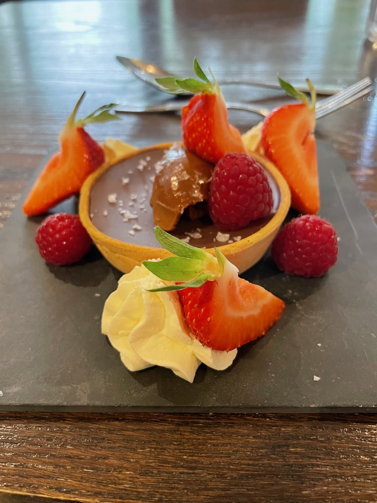
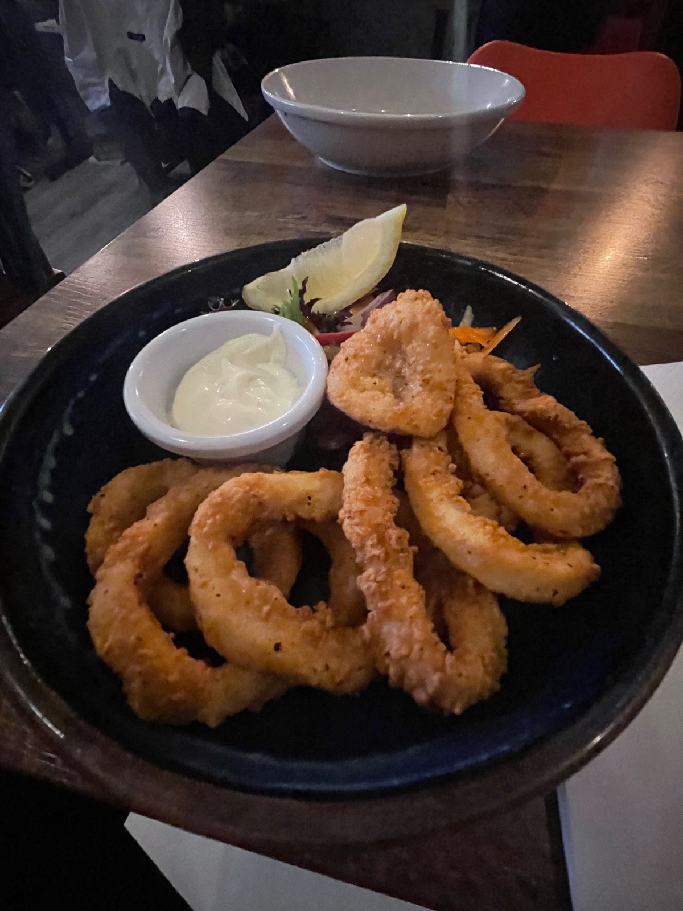
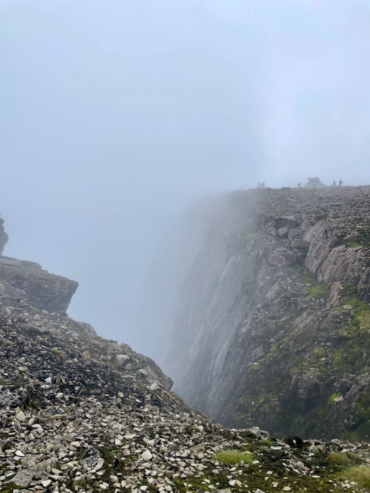
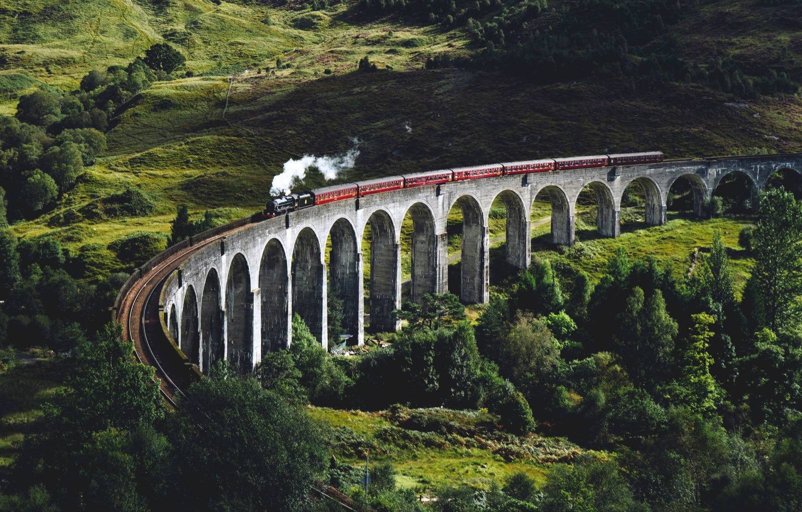
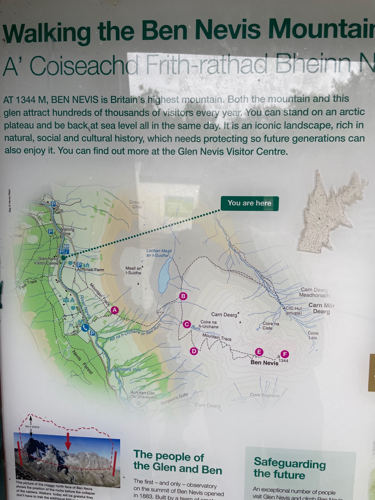

The UK's highest peak at 1,345m. The Mountain Track (Pony Track) from Glen Nevis Visitor Centre is the most popular route — plan 7–9 hours round trip. Weather changes fast, even in summer.

The famous 21-arch railway viaduct from the Harry Potter films. Best viewed from the Glenfinnan Viaduct Viewpoint trail (10 min walk from car park). The Jacobite crosses around 10:45am and 3pm.

The starting point for the Mountain Track. Has a café, toilets, and parking (£4/day). Pick up a trail map and check conditions before heading up. Beautiful Glen Nevis surroundings.

The famous "Harry Potter train" runs from Fort William to Mallaig over the Glenfinnan Viaduct. 84-mile round trip through some of Scotland's most dramatic scenery. Books up months in advance.
Book TicketsOne of the oldest licensed distilleries in Scotland (est. 1825). Tours include a dram tasting — single malt whisky is naturally gluten-free. Located just north of town on the A82.